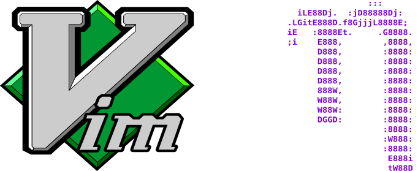
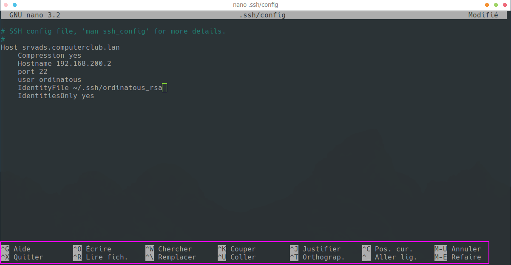

Enregistrer un fichier texte
Pourquoi ?
Lorsque vous venez d’installer un systèmes Gnu/Linux , nombres de configurations se font en mode texte.
C’est presque un réflexe de se dire quel fichier modifier , c’est plus simple et standard. On ne perd pas de temps à expliquer comment accéder à tel ou tel logiciel car nous n’avons pas forcément les même environnements de bureaux.
Et lorsque l’on est sur un serveur, nous n’avons pas d’environnement graphique du tout.
Nano
Par défaut , nous avons nano.
Si je veux éditer mon fichier de configuration de ssh (partie cliente) , il n’existe pas de logiciel de configuration pour ssh : donc j’édite le fichier comme ceci:
nano ~/.ssh/config
Et nano ouvre alors le fichier config du répertoire ssh de l’utilisateur. 
Vous constaterez que les fonctions sont indiquées en bas de l’éditeur.
Enregistrer
Aprés avoir apporter les modifications nécessaire à votre fichier, voici comment l’enregistrer.
Pour info ^ correspond à la touche control du clavier en bas à
gauche.
- Pour nano
^ocontrol opouroverwritedonc écrireentrépour valider le nom du fichier^xcontrol xpour quitter
Quitter sans enregistrer
Si vous voulez quitter sans enregistrer , faire simplement ^x.
Vim
Vim est une version améliorée de VI, car avec celui-ci il y a de quoi devenir à moitié maboule si on ne vous fourni pas un minimum d’explication.
- il a 2 modes principaux:
- commandes
- édition Il y a également le mode visual qui permet de sélectionner du texte ou un bloc de textes afin de le sélectionner pour l’effacer ou le copier .
On active le mode visual avec v , puis y pour le copier , et p pour le copier. On utilise dd pour efacer.
Editer
Pour editer il suffit d’appuyer sur la touche i , puis vous modifiez ce qui vous intéresse. La touche i permet d’entrer en mode édition. La touche echappe ou esc permet d’entrer en mode commande
Enregistrer
echappe:wq!pour quitter et enregistrer- echappe pour quitter le mode édition, c’est la touche esc en haut à gauche du clavier.
:le double point en bas à droite du clavier.wpour écrire writeqpour quitter quit!sans confirmation
Quitter sans enregistrer
Simplement :
echappe:q!
Ca a l’air un peu compliqué pour simplement éditer du texte, néanmoins VIM dipose de nombreuses fonctionnalités et de pluggins permettant de le rendre très efficace.
Ce travail est sous licence Attribution-NonCommercial 4.0
International.